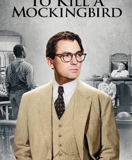

Director: Robert Mulligan

In the Depression era, Atticus Finch, a lawyer, sets out to defend a Black man
accused of raping a white woman. The story highlights the deep-seated prejudice and
discrimination present in society, particularly through the wrongful accusation
and trial of Tom Robinson, a Black man.
Additionally, it explores themes of empathy, moral growth,
and the importance of understanding others, as seen through the experiences
of Scout and Jem Finch as they navigate their childhood in
a prejudiced world.